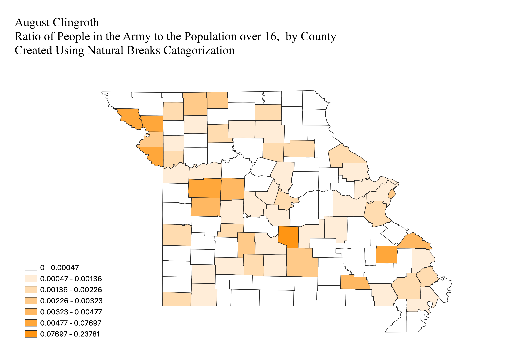

Homework 6.2: Ratios and Classification Schemes
August Clingroth
I have three maps, detailing different employment statistics for counties in Missouri. All maps display a certain portion of the population in a county as a proportion of the total population over the age of 16 in that county. Each choropleth uses a different method of displaying the data.

This map shows number of unemployed workers in each county in Missouri as a proportion of the total working aged population, over 16, in that county. The choropleth displays the data using pretty breaks, meaning the ranges of data that each color represents are round numbers. This makes it easy to understand exactly what range of value each color represents but if the dataset is not spread out enough or not large enough, it means some colors are not necessary or that some colors will have a disproportionate amount of data.

This map shows the number of people in the army in each county in Missouri as a proportion of the total working aged population, over 16, in that county. The choropleth displays the data using natural breaks, meaning the ranges of data are designed based around peaks in the distrubution to avoid too much variation in each color. The problem is that you can end up with arbitrary breaks for each color, and it is harder to interpret the significance of each color.

This map shows the number of people considered "Not in the Workforce" in each county in Missouri as a proportion of the total working aged population, over 16, in that county. The choropleth displays the data using equal intervals, meaning the groups of data are broken up into equal ranges, so each color represents an equal range of data. This makes it probable that certain colors will only represent a few countries while others will represent many. This makes it easy to see clusters but means that one color could dominate the map, or one could be unused, making it hard to interpret the range of data from the map.
CSV and GEOJSON filest
CSV dataset (downloads CSV file)
Link to geojson file in visible format
Link to geojson file as linked to in Githib repository